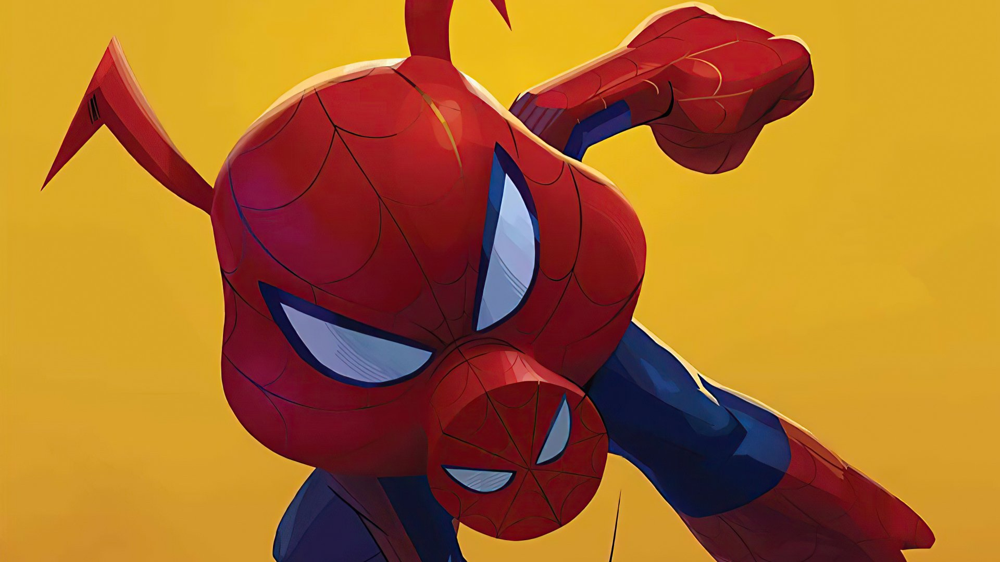
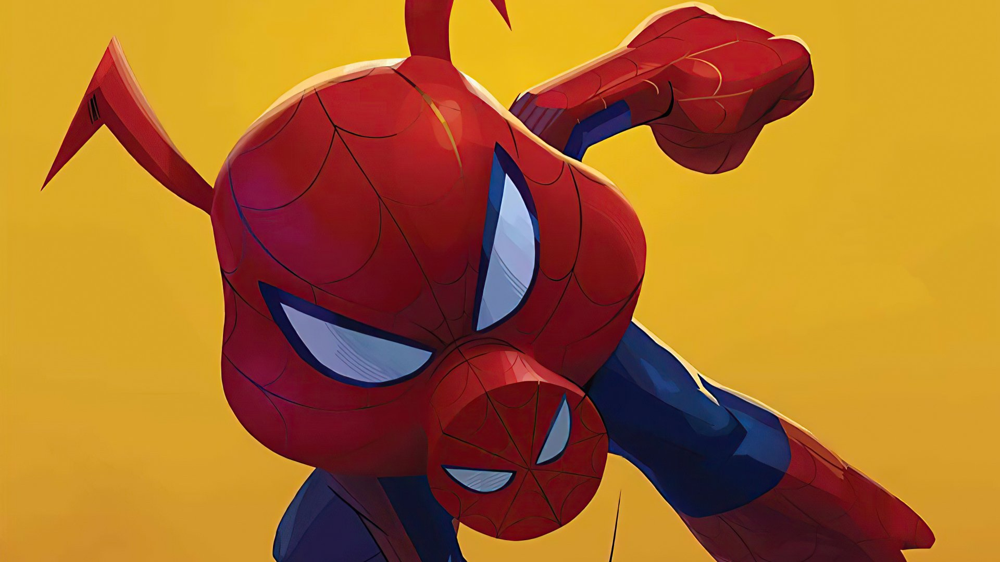
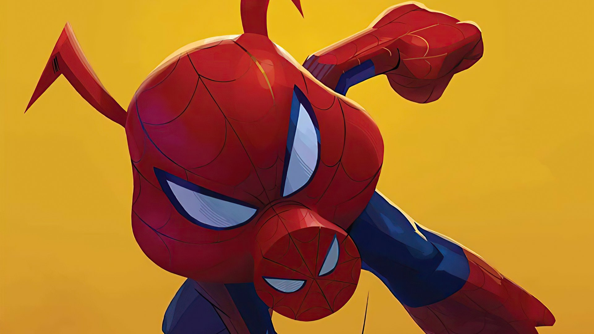

 

"That's all folks!"
Character Description: Porker is a comedic and heroic pig with spider-like abilities. He uses his powers to fight crime and bring laughter to the Spider-Verse.
Abilities
- Cartoonish Spider-Powers: Exaggerated abilities from cartoon physics; can stretch, squash, or survive impossible situations.
- Wall-Crawling & Web-Swinging: Moves like classic Spider-Man, using webs creatively.
- Comedic Strategy: Uses humor and unpredictability to disorient enemies.
- Extreme Durability: Cartoon physics allow him to survive crashes, falls, and explosions.
- Superhuman Strength, Agility, Reflexes: Highly athletic and capable of extraordinary feats.
Relationships
- Miles Morales: Teammate and comic relief buddy
- Other Spider-People: Multiverse team collaborators and friends.
- Porker family: Fun background and support system.
Background
A humorous, cartoon pig version of Spider-Man from an animated universe. He’s goofy but surprisingly brave and heroic, often saving the day in unconventional ways.
Fun Facts
- First appeared in Marvel Tails Starring Peter Porker, The Spectacular Spider-Ham #1 (1983)
- Comic relief character who can survive ridiculous cartoon scenarios.
- Fan-favorite for lighthearted multiverse moments.